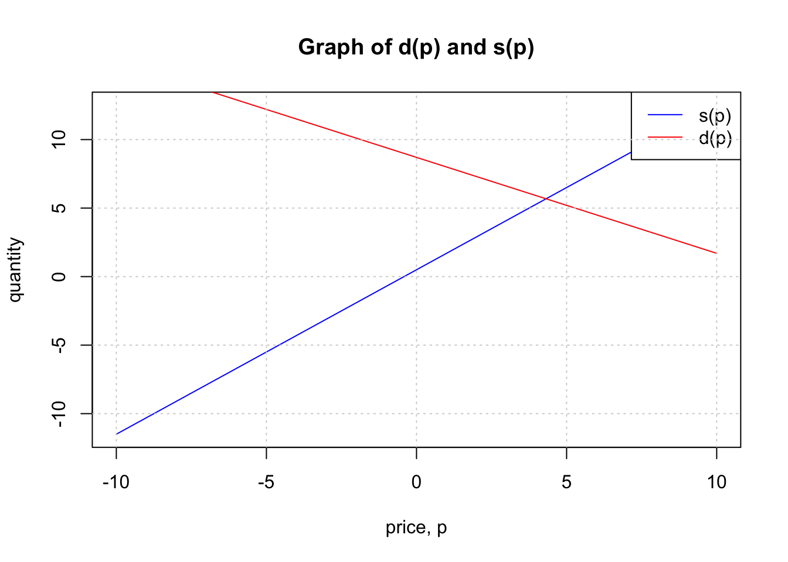
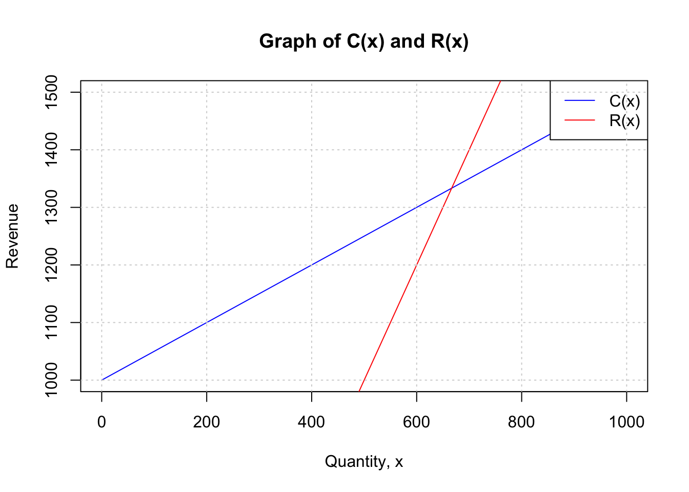

3 Applications
As you saw earlier, graphs are one of the ways commonly used to represent linear functions. By examining graphs of linear functions, we learn a lot about the function. For example, we can quickly tell whether a function is increasing (positive slope), decreasing (negative slope) or neither (zero slope). We can also get a sense of how fast the output values are changing with change in the input values. In order to leverage this benefit of graphs to compare multiple linear functions, it is often helpful to graph the functions on the same grid.
Consider the claim below:
If two linear functions with different rates of change are graphed on the same grid, then, the lines must intersect at some point. Do you think this claim is true? Why or why not?
3.0.1 Supply and Demand
Supply and demand are two fundamental concepts in economics that are sometimes modelled using linear functions. The supply function shows the relationship between the quantity of a product that producers have available and the price of the product. The demand curve shows the relationship between the quantity of a product that consumers are willing to buy and the price of the product. The point where the supply and demand functions intersect is called the equilibrium point. At this point, the quantity of the product that producers are willing to supply is equal to the quantity that consumers are willing to buy. Consider the following example:
Example 1
The supply, in thousands of items, for custom phone cases can be modeled by the equation, \(s(p)=0.5+1.2p\) while the demand can be modeled by \(d(p)=8.7−0.7p\), where p is in the price in dollars. Find the equilibrium price and quantity.
Solution
There are two ways to solve this problem. First, you can set up \(s(p)=d(p)\) then solve algebraically for \(p\) or simply graph the two functions then look at the point of intersection.
Let us do both.
Graphical solution :
For the graphical solution, you simply graph the two functions (you can use tools such as desmos or geogebra) and read out the coordinates of the intersection point.
The approximate point of intersection for the graphs is \((4.3,5.6)\). You can get more accurate values using technology. This intersection is a pair \((x,y)\) where the first number is the price (input) and the second if the quantity (output).
Algebraic solution:
\[\begin{align} 0.5+1.2p&=8.7−0.7p\\ \\ 1.2p+0.7p&=8.7-0.5\\ \\ 1.9p&=8.2\\ \\ p&=\frac{8.2}{1.9}\\ \\ &=4.32 \end{align}\]Thus, the equilibrium price is approximately $4.32.
To find the quantity associated with this price, use any of the two functions to evaluate the output at \(p=4.32\). It does not matter which function you use because both of them have the same output value at the point of intersection (a shared point).
\[\begin{align} s(4.32)&=0.5+(1.2\times 4.32)\\ \\ &= 5.68 \end{align}\]Thus, the two approaches give us the same solution.
3.0.2 Cost Analysis
The cost of manufacturing an item often consists of the fixed costs and the variable costs. Fixed costs are costs that do not change with the quantity of items produced while variable costs change with the quantity of items produced. Fixed costs may include setting up equipment, training workers, etc. The total cost of manufacturing \(x\) items can be modeled by a linear function of the form \(C(x)=b+mx\), where \(b\) is the fixed cost and \(m\) is the variable cost per item. The fixed cost is the cost incurred even when no items are produced while the variable cost is the cost incurred for each item produced.
The rate of change of the cost, \(C\), at a production level, \(x\), is equal to the slope of the cost function at the point \(x\). This rate of change is the cost of producing one more item at that production level. It is also called the marginal cost. In the context of linear functions, the marginal cost equals the slope of the cost function. Note that this may not be the same for a non-linear function.
Example 2
The marginal cost of producing \(x\) phones is $350.5 per phone, while the cost of producing 100 phones is $49,150. Find the cost function, \(C(x)\), given that it is a linear function.
Solution
Since the function is linear, it can be represented as \(C(x)=b+mx\), where, \(m\) is the slope (marginal cost), and \(b\) is the fixed cost. We are given that the marginal cost is $350.5 per phone. This means that the slope of the function is 350.5. We can use the point-slope formula for linear functions (see section 2.3) as follows:
\[\begin{align} C(x)-49,150&=350.5(x-100) \\ \\ C(x)-49,150&=350.5x-35,050\\ \\ C(x)&=350.5x-35,050+49,150\\ \\ C(x)&=350.5x+14,100\\ \\ \end{align}\]Thus, the cost function is \(C(x)=350.5x+14,100\).
Example 3
The fixed costs for a milk processing company are $10,000. Given that the total cost for producing 1,000 gallons of milk is $10,000, find the cost function, \(C(x)\) where \(x\) is the number of gallons produced. Assume that \(C(x)\) is a linear function. Find the cost of producing 100,000 gallons of milk.
Solution
Left as an exercise for you to try.
3.0.3 Break-Even Analysis
The break-even point is the point at which the total revenue equals the total cost. It is the point at which the company neither makes a profit nor a loss. The break-even point can be found by setting the total revenue equal to the total cost and solving for the quantity produced. The total revenue is the product of the price of the item and the quantity produced. The total cost is the sum of the fixed costs and the variable costs. The break-even point is the quantity produced at which the total revenue equals the total cost.
Companies use the break-even point to determine the minimum quantity of items they need to produce to cover their costs. If the company produces more than the break-even point, they make a profit. If they produce less than the break-even point, they make a loss. Companies can use the break-even point to make decisions about pricing, production levels, etc.
Example 4
A milk farmer finds that the total cost of producing milk in his farm is given by the function \(C(x)=0.5x+1000\), where \(x\) is the number of gallons of milk produced. The farmer sells each gallon of milk for $2.
Find the total revenue function, \(R(x)\), in terms of \(x\).
How many gallons must the farmer sell to break-even?
How many gallons must the farmer sell to make a profit?
Solution
The revenue function is the product of the price of the item and the quantity produced. Thus, \(R(x)=2x\).
To find the break-even point, we set the total revenue equal to the total cost and solve for \(x\). This idea is captured under section 3.01 on intersecting lines. You can graph the two functions \(C(x)\) and \(R(x)\) and find the point of intersection in the graph. Alternatively, you can solve algebraically as follows:
This means that the farmer starts making profit at a production level of 666.67 gallons. Below is a graph of the two functions. You can use desmos to accurately read the point of intersection.

Up to the point of intersection, the farmer is making a loss because the blue line (cost function) is higher than the red one (revenue function). After the point of intersection, the farmer is making a profit.
3.0.4 Exercises
The demand of a given product can be modeled using the linear function, \(d(p)=12p+24\).
Find the price of the item at each of the following demand levels:a) 100 units
b) 200 units
c) units
Find the demand at each of the following price levels:
d) $10
e) $20
f) $30
The demand and supply of a certain brand of custom-made cards depends on the price of the cards, \(p\). Suppose that the demand can be expressed as \(d(p)=2.3q+2\) and the supply as \(s(p)=5.5−1.5p\) respectively. Find the equilibrium price and quantity.
The supply function for a certain product is given by \(s(p)=0.5+1.2p\) while the demand function is given by \(d(p)=8.7−0.7p\). Suppose that the equilibrium price is known to be $3.45 and the demand is 5 units when the price is $ 3.15. Find an equation for the demand function, assuming it is linear.
The cost of producing \(x\) items is given by the function \(C(x)=0.7x+500\), where \(x\) is the number of units produced, and \(C(x)\) is the total cost of production.
a) Find the marginal cost.
b) Calculate the total cost for producing 1,000 items
c) How many items would be produced at a total cost of $2,150?
Jane owns a restaurant in downtown, Ithaca. Each year, her fixed costs stand at approximately $349,500 while her total costs for serving 30,000 meals stands at $691,000.
a) Find the formula for the cost, \(C(x)\) as a function of the number of meals served, \(x\).
b) How much would it cost Jane to serve 50,000 meals?
A company produces custom-made shoes. The cost of producing \(x\) pairs of the shoes is given by the function \(C(x)=0.5x+1000\), while the revenue function is \(R(x)=2x\).
a) Find the break-even point. Explain in plain language what the break-even point means in this context.
b) What is the marginal cost of producing the shoes? Explain in plain language what the marginal cost means in this context.
The cost of producing \(x\) pounds of raw Salmon can be expressed as \(C(x)=5x+20\). Each pound of the salmon is sold for $15.
a) Find the revenue function, \(R(x)\).
b) Find the break-even point.
c) How many pounds of salmon must be sold to make a profit of $1,000?
d) Find the profit made if the company sells 2,500 lbs of salmon.
The budget for a certain university system with several campuses projects a fixed cost of $242,500 at each of its campuses and a marginal cost of $550 per student.
a) Find the cost function, \(C(x)\), where \(x\) is the number of students enrolled.
b) The budget projects that there will be 240 students at each campus. Calculate the total cost at each campus.
c) Due to budget costs, each center is limited to $500,000. What is the maximum number of students that can be enrolled at each campus?